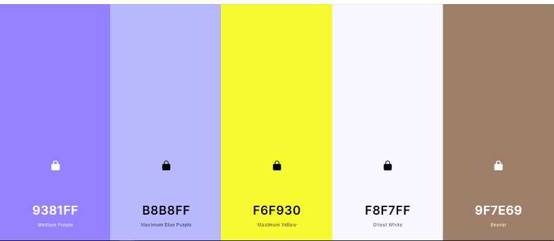

Colors
How I wil be using the colors
#9F7E69 will be used a primary color. header and the buttons will use this color. This will be done because the color is vibrant
#B8B8FF will be used a footer background since its a light color and easy to skeem over
Maximum yellow on the logo
#F8F7FF will be used as a whole page background color
#9381FF will be used in some of the h2-s for empasis